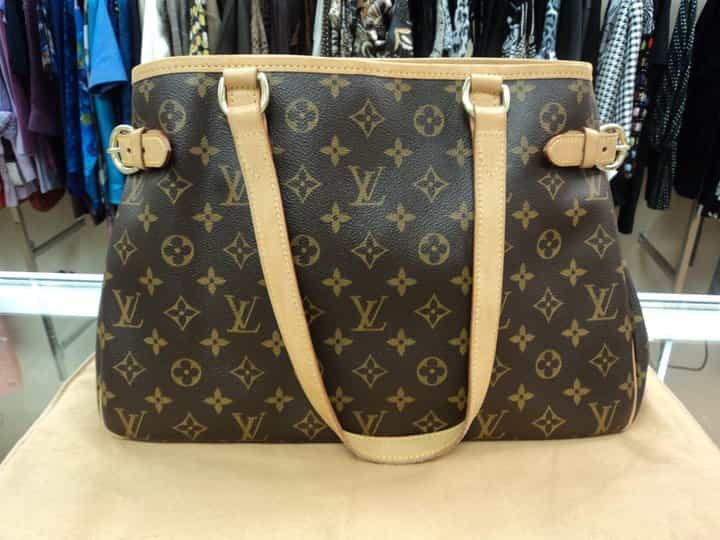

< < < Back
5 Reasons Why I No Longer Date Black Women – Return Of Kings
As a military kid, I was fortunate to live a lot of different places at a young age. Before I was 18 I’d lived in nine different states and had been to many more. After college I continued my nomad-like existence before finally settling down on the west coast.
An obvious benefit of having lived in all four corners of the U.S. is the opportunity to meet and date many different kinds of women. I use the word “different” loosely because the older I got, the more I realized that from sea to shining sea, American women are pretty much the same, though it took me until about five years ago to accept it. Location and upbringing creates a few differences between them, but by and large, chicks that are born and raised in the states are clones as far as sexual interaction goes.
However, the element that makes more of an impact than others is race. For example, in my experience white girls tend to be much more sexually open and experimental (they do it all), Latinas are fiery, passionate, and embrace their femininity more than most, and aesthetically speaking Asian women are among the thinnest across the board.
Most people who are honest with themselves know that black women have the lowest SMV of any female in the western hemisphere and maybe even the world. Plenty of men out there have a taste for them but the cruel reality of natural selection all but weeds them out of just about every pool of men with options.
I’ve dated my fair share of black girls, but after I became unplugged I find that I rarely game them unless they are an exquisite specimen, and even then I tread very carefully. This was not a conscious choice. It was just a natural progression in my development. The more my game level improved, the less attractive they became. These days they’re practically invisible to me.
There’s a laundry list of reasons my attraction to black women has dwindled over the course of my crimson capsule evolution and I could probably write a five-part series on it. Instead I’ll just give you my top five reasons I prefer to leave them alone.
5. Their infatuation with name brands
I once dated a girl who had a $300 Michael Kors diaper bag for her kid, a $250 Louis Vuitton purse with a matching $125 wallet, and $200 Gucci sunglasses. How do I know what she paid for them? She reminded me every chance she got and did so loudly and proudly.
I’ve got no problem with someone spending a little extra coin on things they won’t compromise on. We all do it and that’s okay. But living that far above your means is ridiculous. Most girls like to have nice things, but black women are slaves to the almighty label and will make sure they get them at all costs…literally.

Black girls sell their souls for this stuff
They wouldn’t be caught dead at the club without the latest Steve Madden heels or with a man rocking an off-brand shirt he bought at Target for 50% off. Accusations of such treachery from her peers are a slap in the face as far as she’s concerned.
Truth be told, I got tired of the daily label checks making sure I was wearing name brand this or that, as though I would shame the family name by sporting a generic pair of jeans I picked up at the thrift store. Plus, dating chicks whose tw0-year-old’s Jordans cost more than my ratty old skateboard shoes, and being reminded of it, while humorous, gets old. Chalk it up to ego and common sense.
4. Their extreme sluttiness
I know, I know. Most girls in this country are sluts. I get it. But black chicks are the undisputed queens of slutdom and it’s not even close. This, like a lot of reckless female behavior, probably falls into the lack of self worth category.
Sisters are well aware of the fact that they’re at the bottom of the sexual food chain. For a woman this can be one hell of a mind job so it stands to reason (albeit a very bad one) they’d go to extremes to validate their sexual allure but that’s not my problem.
“But SharpShooter, if they have such limited options who’s banging them and why?”
Good questions.
1. It’s a known fact in the ‘sphere that 6s and 7s are far sluttier than 8s and 9s because of their sexual insecurities. They feel the need to consistently prove to themselves and everyone else they are desirable as women so they sleep with more men. This principle crosses all racial boundaries.
2. Though they don’t often attract men outside of their race, there is a surplus of black suitors available who are more than willing to take advantage of their promiscuity, which increases their notch counts. The supply is diminishing by the day, but as of right now there are plenty of hungry (and thirsty) diners at the buffet.
Still ain’t buyin’ it, eh? Fair enough but check this out:
I was as beta as beta gets through my twenties but banging black girls was like taking candy from a baby. I had zero game to speak of, yet I regularly fell ass backward into their panties quite easily. If they were giving it up to losers like me there’s no telling how many others dudes have easily slipped by their velvet ropes and pounded their dance floors.
All of us here know that most chicks in this cesspool of a sexual market are more than liberal with their goodies. That said, I’ll take the lesser of two evils and fuck sluts over petri dishes.
3. Just about all of them have kids
Being a slut has consequences—namely, children. Every single black women I’ve dated, banged, or whatever else had children. All of them. To make matters worse a lot of them have a lot more than just one or two. One night you’ll see them shaking their asses at the club, the next you see them at the market buying formula with five kids in tow.
During the five or six year window I hooked up with black girls I found that this affliction didn’t discriminate in the least. The good looking, the average looking, the chubsters (more on that later), the clubbers, the church goers, the employed, the unemployed, the slutty, the “snowflakes” (who, of course have only slept with their six baby daddies and nobody else) all had children. Shit, even the educated ones with great jobs, nice cars, and living in nice neighborhoods who seemed to have their act together had a few whipper snappers running around.
It’s all fun and games… …until your life ends up like this
I can hear the SWJs with their white guilt excuses now: “Studies show that Caucasian women have more access to birth control and abortion clinics than do African American women because of [insert bullshit economical breakdown], so they give birth to more children, thus….blah blah blah.”
Look, I can’t speak to whether that’s true or not but I do know this: birth control is the cheapest and most accessible it has ever been in history. Their finances may or may not be limited, but surely they can pony up the change in their designer bags to avoid baggage that decreases their value as long-term partners.
I’m fairly certain that not every black woman out there has children, but finding childless sisters is about as easy as nailing jell-o to a tree. Good luck with that.
2. Their obesity rate
It’s an open secret that black women lead the league in FG% (fat girl percentage). The PC media will blame this on targeted marketing of fast food, lack of nutritional options and education, lower income, or any number of excuses designed to take the focus away from personal discipline and responsibility but their excess body weight is a product of their laziness and lack of drive, as is the case with anyone who is grossly overweight.
The whole “Big and Beautiful” movement isn’t fooling anyone either—including the women who spew this trash. They know good and well that no man with a healthy sexual desire is looking in their direction for that kind of action. Deep down they know men aren’t into women with a disproportionate amount of “curves.”
This is an obvious facade to feel better about themselves while stuffing their faces with sugary high-carb deserts while hopelessly fantasizing about the Just Wright scenario happening to them. Their beds are as cold as the days are long, and pretending they’re not won’t change that.

They might be attractive if they lost 100+ lbs each
Black girls aren’t the first choice of the vast majority of men out there as it is, and their overweight percentages only shrinks their already depleted number of bangable women.
1. They’re not feminine
This is by far the single most unattractive trait black women possess. Dealing with your typical self-proclaimed “strong black woman” is a huge pain in the ass and just not worth the sexual exchange.
Most western girls foolishly believe that acting like a man is attractive to men. Black women are no different but they take it to another level. They exude so much masculinity it overshadows any and all desirable qualities that may work in their favor. They want to project strength but their undisguised mannish tendencies are boner killers.
More and more black men are adopting this mindset
Men don’t want to date women who act like men no matter how many God awful Tyler Perry movies endorse this myth. The bottom line is that most black girls just aren’t feminine. If they embraced femininity like their Latina counterparts they might actually surprise themselves with the growing amount of positive attention they start getting from the public in general, including men.
One comment on a blog I read a while back summed this up pretty accurately:
We don’t want strong black women, we want hot and feminine black women!
Couldn’t have said it better myself.
In Closing…
I’d love to slay hot black ass on the regular but it’s slim pickings out there. The sisters out there that do pass the boner test have way too much baggage to consider even putting them in fuck buddy status. Their overt masculinity also takes them completely out of the running for an ONS. It’s sad to say but I’ve come to a point in my life where I’ve realized they’re just not worth pursuing anymore.
I suppose they could raise their collective SMV enough to become a viable option for men other than thirsty simps, but it would take a generational mind shift of epic proportions. Though they have their deficiencies, there are plenty of changes they could make to maximize their desirability.
However, the odds of black women (or any American woman for that matter) changing their ways are exceedingly long. Their mentality and the environments they create for themselves are two roadblocks they simply do not have the knowledge or resolve to overcome. I’ll pass.
Read Next: Why Do Black Women Love Scandal?